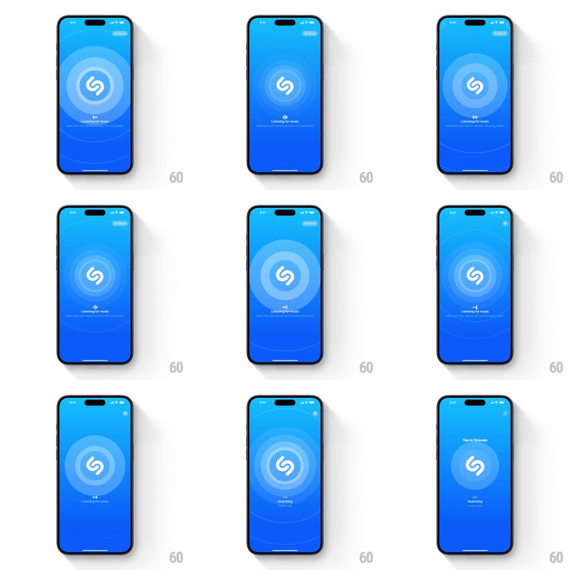

Media
Frame-by-frame

Rebuild this interaction 1:1: Shazam's listening state - tap the big S button and concentric rings pulse outward while a tiny audio-bar indicator bounces, morphing into a loading state as recognition runs.

Rebuild this interaction 1:1: Shazam's listening state - tap the big S button and concentric rings pulse outward while a tiny audio-bar indicator bounces, morphing into a loading state as recognition runs. ## Integration Integration: stack-agnostic spec - springs given as stiffness/damping, timed motions as duration + curve; map every value to your framework and animation library of choice. ## Scene A blue gradient screen (lighter at top, deep blue at bottom). Center: the white Shazam S in a filled circle. On listen: "Listening for music" with a hint line beneath, a small bouncing-bars indicator, and expanding concentric rings around the button. A My Music sheet peeks at the bottom in the idle state. ## Motion spec Pattern: pulsing sonar rings + audio-bar indicator. - Idle: the button breathes very subtly (scale 1 to 1.02, 3s); "Tap to Shazam" above it. - Tap: the button presses (scale 0.94, 120ms, haptic) and the listen state begins - the label swaps to "Listening for music" (crossfade 200ms). - Rings: concentric circles spawn at the button's edge every ~700ms, expanding to 3x the button diameter while fading (opacity 0.35 to 0, scale ease-out over 2.1s) - three rings alive at any time, evenly phase-offset. - Bars: a 3-bar mini equalizer under the label bounces (heights cycling 4-14px, each bar its own phase, ~300ms period). - Recognition phase: the rings tighten (spawn interval to 500ms, slightly faster expansion) and the bars morph into a small circular spinner (the bars converge and rotate, 300ms morph) while the screen holds - then the result card slides up. - Cancel or timeout: rings stop spawning, existing rings finish their expansion, and the idle label crossfades back. ## Calibration - Rings are thin white strokes (2px), never filled circles. - The button never moves - all energy radiates from it. ## Reduced motion Single subtle ring loop; bars become a static "listening" indicator. ## Don't miss - The blue gradient is the brand - no other colors enter during listening. - The bottom My Music sheet is gone during listening; the listening state owns the whole screen.